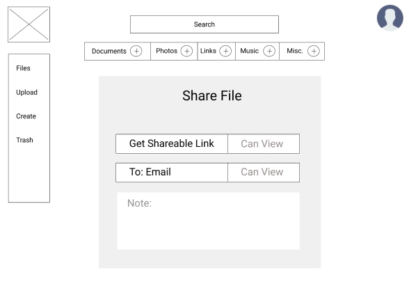
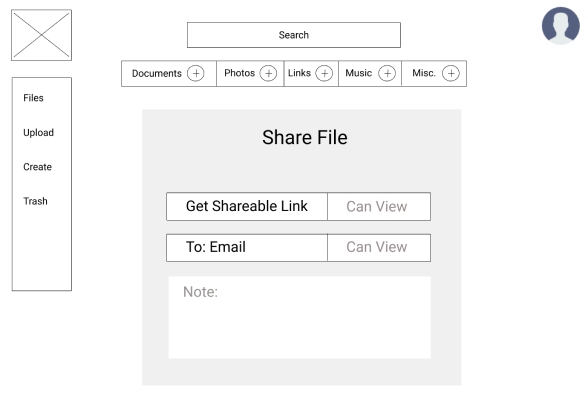
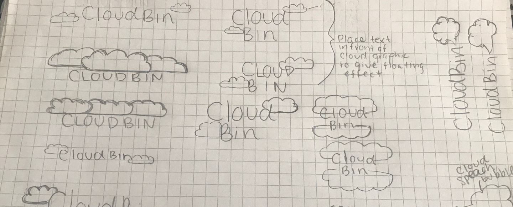
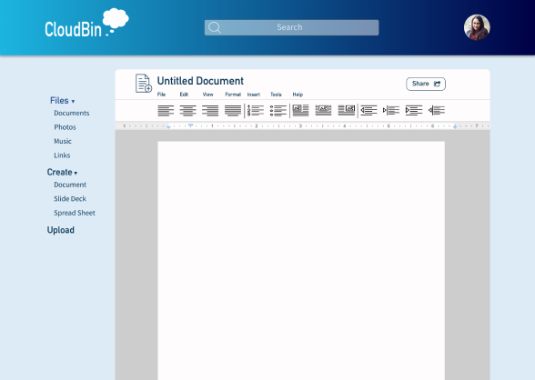
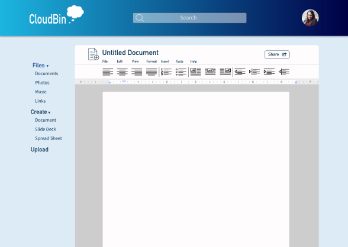
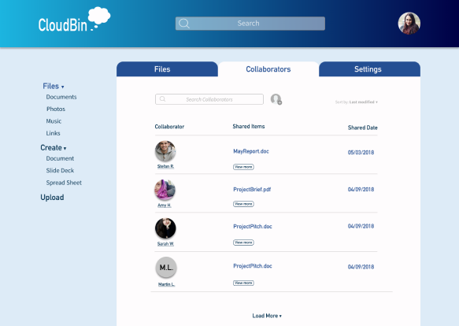
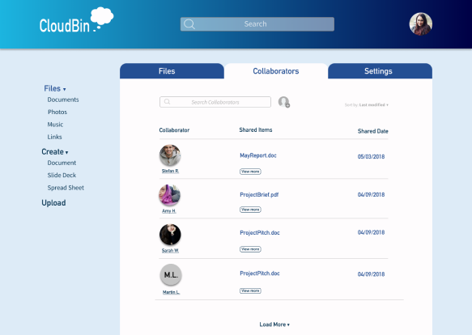
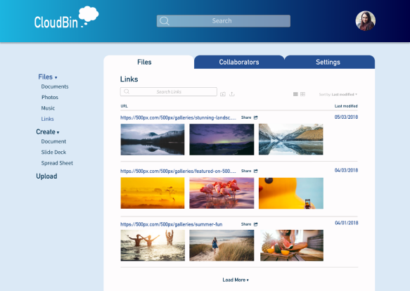
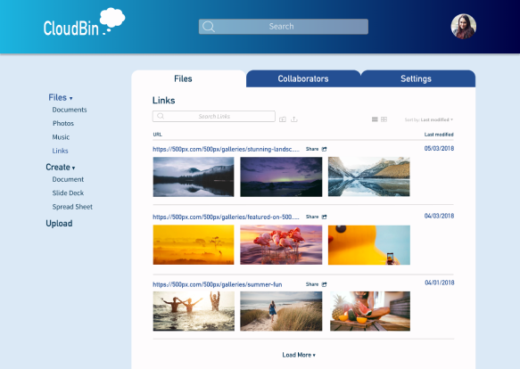

Home
About
Work
Contact
Home
About
Work
Contact
CloudBin
CloudBin is a cloud storage platform that provides users with a seamless experience that focuses on content organization and user collaboration.
 View Prototype
View Prototype
Deliverables
- User Surveys
- Personas
- Competitive Analysis
- User Stories
- User Flows
- Branding
- Wireframes
- User Testing
- Visual Design
- InVision Prototype
Tools
- Figma
- InVision
- Adobe Illustrator
- Maze
- Draw.io
- UsabilityHub
Roles
- UX Design
- Visual Design
The Problem
The cloud storage space is saturated with many different solutions focusing on many different things. Some are heavily focused on file backup, and others on content creation or note taking. Many users are accustomed to using multiple different platforms to achieve their goals, while some users also confessed to using products with confusing user interfaces which inhibited them from from having a great overall experience.
The Solution
CloudBin takes the successful features of other storage platforms, and combines them to create a ‘one-stop-shop’ cloud storage service. With separate customizable tabs for different types of media, you can easily find your documents, music, images, and links without having to surf through a jumble of your content. Upload multiple documents at once, and CloudBin will automatically sort your content into the appropriate tab based on the content’s extension type.
User Research
To begin the project, I started with a user survey to try and determine what the main features of my app would be. Some of the important questions I asked were:
- What tools were users currently using?
- What were the users primarily using their cloud storage service or services for?
- What users disliked most about their cloud storage service or services
- How important were collaboration tools to users?
Key Takeaways
Were primarily using their cloud storage services for accessing files across multiple devices
Were using their services for storing photos, document creation and collaborating with others
Said that they would use a collaboration tool if the platform had one
Based on all of these answers, I started to have an idea on the direction I wanted this project to go. I knew that creating an app that had many different features was important because users are already using multiple platforms, I wanted to create an app where users wouldn’t need to use a different app alongside mine.
Competitive Analysis
To further research the cloud storage space, I conducted a SWOT analysis of three large companies currently offering a cloud storage service of some sort: Dropbox, Pinterest, and Google Drive. Dropbox, Google Drive and Pinterest are three different services offering different robust features. While Dropbox and Google Drive are two of the most popular cloud storage services, both are different in their offerings. A new cloud storage app could potentially build upon the social aspect of Pinterest, and the media storage aspect of Google Drive and Dropbox. The ability to allow users to create documents within the app, share and collaborate on them with other users, as well as the ability to save items they find interesting to a ‘dashboard’ that is viewable to others they are connected with on the app.
User Personas
After getting an understanding of competitors in the space, I needed to conduct a few interviews with some of the respondents from the user survey to really get an idea of who my target audience is and what they are looking for. After conducting these interviews, I came up with two user personas: the young professional, and the student.
User Flows
After finishing my user research, it was time to begin thinking about the important features I would be applying to my app. Based on the answers I received from my survey and user interviews/personas, I knew the high priority user stories would need to be uploading items, content creation, collaboration, file access across devices. I then created a series of user flows based on all of the highly prioritized stories.
Wireframes
Once I had all the most important features figured out, I began my wireframes. I first started on paper by roughly drawing out my ideas for the layout of several different pages. The sketches were pretty bare, but I wanted to try and get my ideas down as quickly as they were coming to me. Finally, I brought the rough sketches to life by creating the digital wireframes on Figma. From here I was able to fully map out my pages by utilizing the user flows and user stories.


 


Brand Name & Logo Design
I drew up a list with the words cloud and storage at the top. I thought of a few words I associated with the word cloud as well as a couple more for storage. I wrote down the word bin and it hit me, CloudBin. I wanted a name that would explain what the product is, but not make it too literal.
The logo design was the part of branding I had the most difficulty with. I tried a ton of different variations of designs with boxes, clouds, clouds with boxes etc. I ended up with a couple variations of a cloud bubble either on top of the word CloudBin, or trailing it. The final result utilized different colors for different backgrounds. Out of everything I designed, the logo was one of the main things I would design differently if I had the time.
Color Palette & Fonts
I chose a few different shades of blue, from a dark navy color, to a lighter pale blue. I also included a bright raspberry red color that I had intended to be primarily used in certain call to action buttons as well as the logo. Although I did use this bright color in my first iterations of my app, the final version does not use it. After testing with some users, they felt the color made it seem that those call to action buttons were throwing an error because of the intense redness of the color.
Prussian Blue
#083553

B'dazzled Blue
#244F93
Pale Cornflower Blue
#ABCEEA
Rusty Red
#DD3044

Sign up/Sign in gradient

Landing page gradient
For the primary font, I chose a bolder font called DIN Alternate and a lighter font for the body copy called Source Sans Pro. Both are simple and sans-serif fonts, but the boldness of DIN Alternate pairs well with the lighter Source Sans.


High Fid
Some text
My first designs had all the content tabs located at the top with confusing upload icons next to the name of the tabs. For my preference tests, I decided to change the styling of left side nav bar, the background color of my web app, and the share/cancel button on the share pop up.
For the left side nav bar, I wanted to see if the arrow indicator made sense to users. I tried changing it by getting rid of the arrow and instead highlighting the “Files” word on the nav bar. 70% of respondents liked the original design with the arrow, some stating it’s a cleaner look and makes it more obvious which page you’re on. Some also made a good point saying the red color comes across as an error or alert that signals something is wrong. In hindsight, I shouldn’t have tried using that red color.

For the design of the share pop up, I wanted to test a simple design of the share/cancel button to see if users thought the original button design was too dark. 70% of people liked my original dark design stating that the button is clearer, easier to see, and looks more action oriented.
After conducting these preference tests, I still felt the design was lacking and needed more uniformity. I created a few more iterations and finally decided on a final design where the side nav held the content tabs and the top tabs were used to toggle between your files, collaborators and settings.
 

 

 


What I learned and what I would do differently
I started this project with very little working knowledge of how much goes into user research. Looking back, I realize that my user survey could have asked questions in a way where I could get better, more actionable data. Some questions could have been asked as a linear scale (how important is collaboration to you) rather than a check box or multiple choice question. It also became apparent to me throughout this project that the process from research to design development takes a very very long time, and the more user testing you conduct, the better. I know for my next project that user testing will take a much more integral part in my process. I see now that if I had tested different aspects of my design more frequently that it would have taken the guesswork out of it and would have allowed me to get to my final design much quicker. If I had more time on this project, I would have spent considerably more time on the logo design. I’m still not completely content with how it turned out, and I’m sure I could come up with something a bit more appealing. Overall, I am proud of how hard I pushed myself on this project. I didn’t know the tools I used very well and I am really excited to start my next project and utilize all my newfound knowledge and create something I am really excited and proud of.